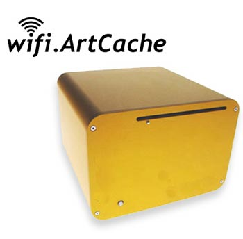

|

WiFi.ArtCache consists of a WiFi node containing digital art objects retrieved by attendees via an embedded 802.11 access point. These art objects are interactive and programmed in Flash or Processing (http://www.processing.org) in such a way as their behaviors and interactivity can be articulated based on the physical and virtual activity of other attendees who are interacting with the node's art objects. For instance, each art object can access variables and functions that specify such things as how many people are currently interacting with the ArtCache and thus alter characteristics — color, tempo, shapes, animations — based on a range of variables that, ultimately, indicate the kind and level of social activity in and around the ArtCache.
WiFiArtCache is a mobile WiFi (802.11) node that serves as an wireless access point for digital art. The ArtCache is a free floating 802.11 WiFi node and is deliberately not connected to the public internet. The digital art objects are programmed using Flash or Processing and are served via conventional web application server (Apache + Tomcat + Java) contained within the ArtCache.
These art objects’ interactive functionality are coded by technology-savvy artists, using a special API (application programming interface) I developed that allows the programmers access to a number of features of the ArtCache. Interactivity may be influenced by the objects’ physical relationship to the ArtCache's WiFi node, activity occurring with other objects’ that are within range of the node, certain “existential” parameters having to do with the uniqueness of objects and their lifespan, as well as physical inputs from sensors attached to the ArtCache. Specifically:
* whether the object is in or out of range of the Cache
* how many of the same kind of object are active (downloaded and being interacted with by someone) in range of the node
* how many of _any_ kind of object is active in range of the node
* how long has the object been out of the node
* how long has the object been “available” on the node (i.e. what is its age?)
The ArtCache is also configured to set limits on the number of “copies” of a particular digital art object that may be downloaded to visitors’ WiFi devices. This contributes a factor of "preciousness" to the objects — some pieces may not be available after a specified number of downloads, just like a limited edition art object.
These various parameters by which the artists can develop their art objects' interactivity are deliberately designed to tap into the social activity occuring within range of the node. Typically, this range is between 10-30 meters, depending on the physical architecture of the installation area.
Visitors engage the installation with their WiFi-enabled device (typically a WiFi-enabled laptop) in order to view and interact with digital art as if it were a virtual gallery.
One digital art object authored for the WiFi.ArtCache is called “Plant Life.” It has the "existential narrative" described below, which captures in summary one possible usage scenario. What unfolds in this narrative is affected by whether the object running on a hypothetical user's computer is in or out of range of the Cache's WiFi node, how many other objects are active while this user is in range of the node, and bits of communication that take place between various visitor's instances of the Plant Life object.
Plant Life example
This WiFi.ArtCache object is designed to represent the vagaries of botanical life. When you download one of the Plant Life objects to your WiFi enabled laptop, PDA or desktop, you see a small, lone tree. The tree sways lightly in the wind, and the day, as indicated by the sun low on the horizon, is young. As more people download these Plant Life objects, other trees begin to appear. The scene begins to assume a less barren appearance. Birds and a spider monkey appears, and your tree as well as others’ begin to mature and bloom.
You’ve downloaded your Plant Life object to your mobile device so you can continue to interact with it later when you go home. But when you get home, the scene is different. It’s late fall, and your tree is in a distinctive autumnal state. Leaves slowly fall to the ground in a pile, the sky is dark despite the fact that it is only three in the afternoon. Most markedly, there is no sign of activity. No other trees are around and the animals have all gone away.
Motivation
WiFiArtCache is a kind of "theory object" — a constructed, material artefact that I use to investigate and expand the metaphors by which we understand the possibilities of digital communication with wireless technology. I am particularly drawn to consider how notions of physical closeness, reproducibility, preciousness and proximity can be reinvested into our understanding of what computers, the internet, social space, public space and networks mean. |